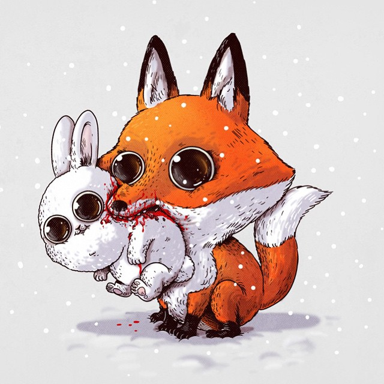
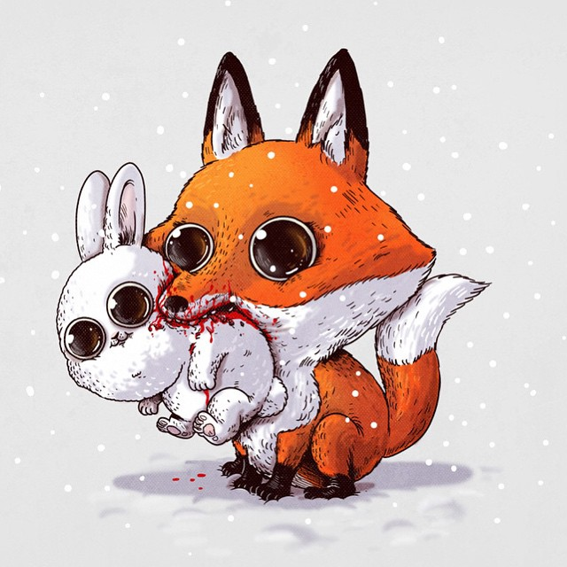

In the novel, It is an eternal entity that can shape shift and change forms. After arriving on Earth,
It would sleep for approximately 27 to 30 years at a time, then awaken to wreak chaos and feed
(primarily on children's fear). It is able to take many more forms than the film adaptations depict,
including werewolves, bats, leeches, and sharks. It could embody any of a child's worst fears.
It apparently originated in a void containing and surrounding the Universe—a place referred to in the
novel
as the "Macroverse" (a concept similar to the later established "Todash Darkness" of the Dark Tower novels)
.
At several points in the novel, It claims its true name is "Bob Gray", and is named "It" by the group of
children
who later confront it. Throughout the book, It is generally referred to as male; however, late in the
book,
the children come to believe It may be female (due to It's manifestation as a large female spider). In
addition,
upon seeing its true form Audra Denbrough thinks, "Oh dear Jesus, It is female. "PENNYWISE LIVES".
 


"on ne voit bien qu’avec le coeur. L’essentiel est invisible pour les yeux."